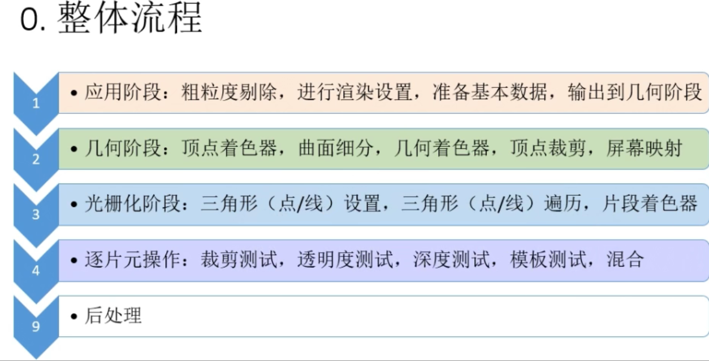
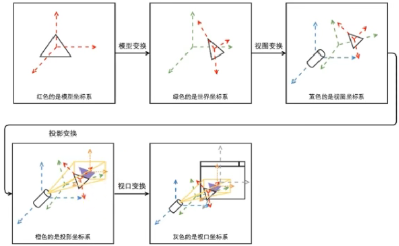
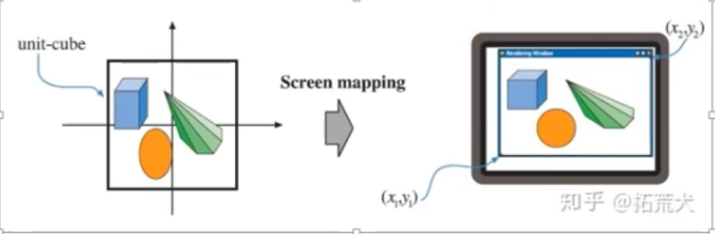
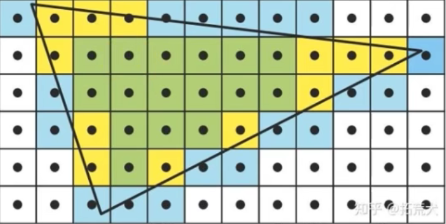
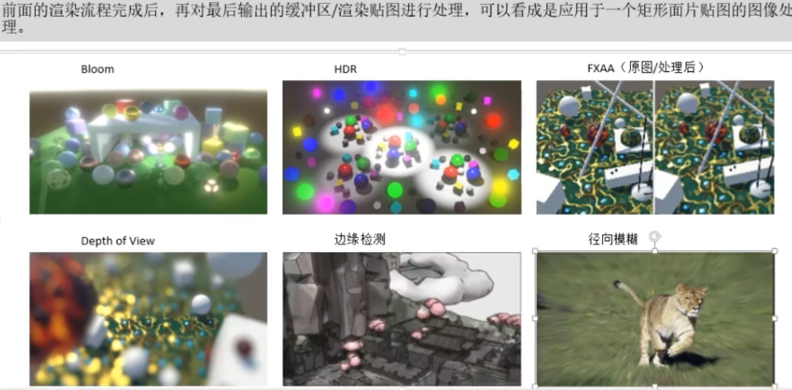

应用阶段
1.输入基本场景数据
* 场景中物体数据
--物体变换数据：位置，旋转缩放等（unity中的tranform）
--物体网格数据：顶点位置，UV贴图，法线，切线等
* 摄像机数据
--位置，方向，远近裁剪平面
--正交/透视（视场角FOV）
--视口比例/尺寸等
* 光源及阴影数据
--设置光源：方向光的颜色和方向；点光的颜色，位置范围和衰减系数；聚光的颜色，位置，方向，内外圈锥角等
--设置阴影：是否需要阴影，判断该光源可见范围内是否有可投射阴影的物体；阴影参数，对应光源序号，阴影强度，级联参数， 深度偏移，近平面偏移等
--逐光源绘制阴影贴图：近平面偏移，逐级联
* 其它全局数据
2.加速算法，粗粒度剔除
* 可见光裁剪
* 可见场景物体裁剪
--八叉树；BSP树；K-D树；BVH包围盒等
3.设置渲染状态，准备渲染状态
* 绘制设置
--着色器；合批方式（GPU instance；动态批处理）
* 绘制顺序
--相对摄像机的距离排序
--材质RenderQueue排序
--UICanvas
* 渲染目标
--RenderTexture
--FrameBuffer（帧缓存）
* 渲染模式
--unity的成像渲染和延迟渲染
4.调用DrawCall，输出渲染图元到现存，让GPU处理
* 顶点数据
--位置，颜色，发现，纹理UV坐标，其它顶点数据等
* 其它数据
--MVP变换矩阵
--纹理贴图
--其它数据
- 应用阶段还是在CPU上进行，从下一阶段开始就在GPU上进行了
几何阶段（Geometry Processing）
1.顶点着色
* 视图变换

* 顶点着色
--计算顶点光照
2.可选项点处理
* 曲面细分
--生成更多顶点，将网格，图元细分
* 几何着色器
--基于图元操作，可能是一顶点，一个线段，两个顶点，也可能是多个顶点构成的连续线段，也可能是三个顶点的三角形
--通过给定图元生成更多图元
3.投影（GPU自动完成）

4.裁剪

* 视锥体裁剪（CVV）
* 正面或背面剔除（可配置）
* OPENGL中，xyz坐标都是[-1,1] ; D3D中，xy坐标范围是[-1,1] ，z坐标范围是[0,1]
5.屏幕映射（Screen Mapping）
* 从连续到离散
* 存在坐标系差异

光栅化阶段
1.三角形设置
2.三角形遍历（采样）

* 片元并不一定指像素，一个像素可能会是多个三角形的重叠，经过着色后再决定哪些保留，如何混合
3.抗锯齿（Anti-Aliasing）
* MSAA：多重采样
* SSAA：超级采样
* FXAA/TXAA：后处理技术，不在光栅化阶段
* TAA
逐片元操作
* 片元着色
* 颜色混合
--透明度测试（Alpha Test）
--深度测试（Depth Buffer Test）
--模板测试（Stencil Test）
* 目标缓冲区
--FrameBuffer
--RenderTexture
总体流程图：

后处理阶段

补充：
GPU架构特性：并行性好
例如，在对同一物体的多个顶点进行光照处理或者着色计算时，这些顶点可能只是数据不同，但是它们的光照，着色算法以及几何运算方式都一样，这种情况下，将计算分配到GPU的不同工作单元上同时执行会获得巨大的效率优势。光栅化，逐片元操作同理。